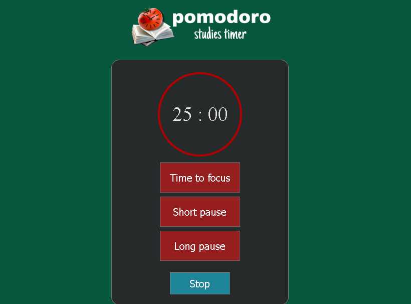
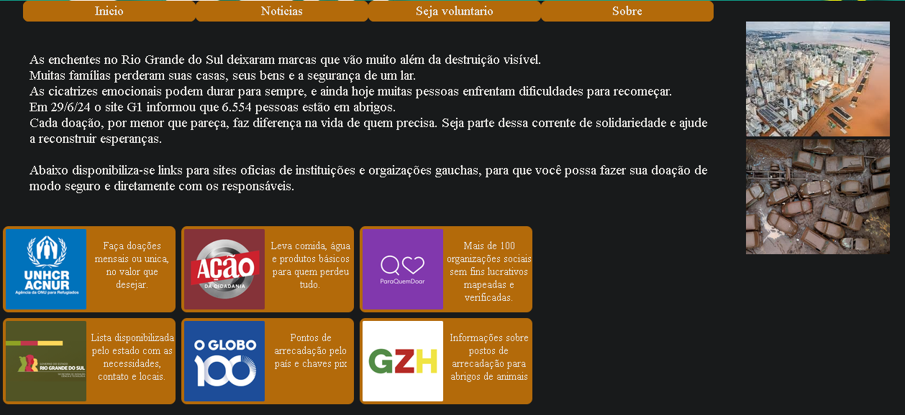
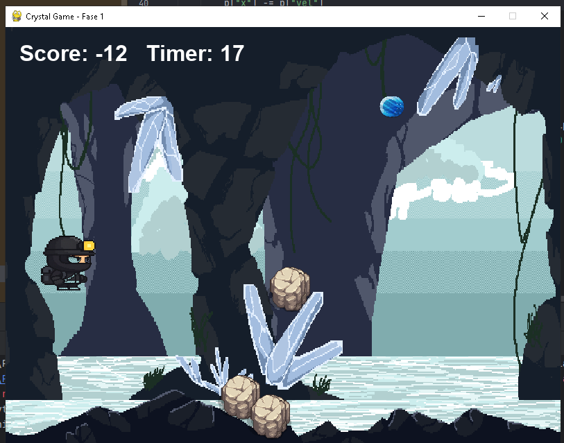

What I’ve Been Building
A showcase of personal builds and university projects highlighting my skills in software development. Driven by curiosity and a desire to learn, I love creating code that solves practical problems.

Studies Timer
As an active user of the Pomodoro technique for my own study routine, I challenged myself to build my own fully functional Pomodoro Timer. This was one of the very first applications I ever developed, bridging my personal daily needs with my journey into software development.

Portal for news and a guide for volunteers
A community-focused web platform developed for a university extension initiative in response to catastrophic flooding in my home state. Designed for rapid information access, the site directs users to verified news sources and trusted humanitarian organizations to help coordinate relief efforts.

Crystal Game
A 2D mini-game built from scratch to challenge my logic and problem-solving skills in game development. Players must navigate the screen to collect crystals while avoiding obstacles. While currently featuring a single playable level, it serves as an ongoing project with planned updates and new mechanics.